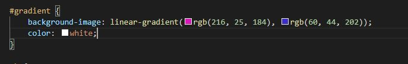

10/4 - 10/8, Scripting and More...
We've covered a lot in class since our last blog. The biggest thing being JavaScript!
JavaScript allows to create dynamic websites by communicating with servers, handling events,
and much much more. You can create functions, variables, and objects all of which can interact
with the HTML and CSS of your website giving you much more flexibility in what you want
the user to be able to see and do. Some simple things I found that you JavaScript allows you to use
are alert windows, and calculations. Obviously you can do much more with than this, but I feel like
small things will be what is used most in many sites so I think it's good to feature them.
While doing our peer reviews for each others websites I noticed that some of my peers had gradient backgrounds.
I looked into this over the last few days. It's fairly simple but I think it can really add style to your pages.
While I don't think it would go well with my static site as I think the gray background fits it better. I think
I'll be using some sort of gradient on our next project.

Sources:
https://www.w3schools.com/css/css3_gradients.asp
https://cssgradient.io/
Return.